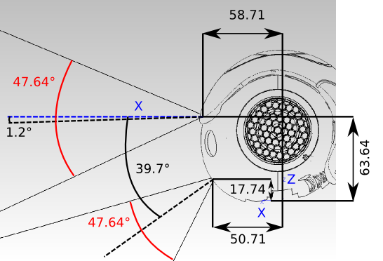
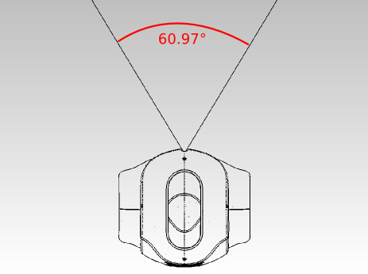
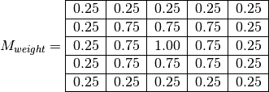
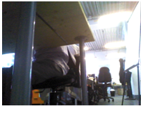
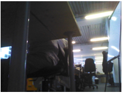
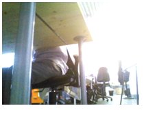

Video camera¶
Two identical video cameras are located in the forehead.
They provide a up to 1280x960 resolution at 30 frames per second. They can be used to identify objects in the visual field such as goals and balls, and bottom camera can ease NAO’s dribbles.
2D Camera¶
Camera indexes¶
The camera indexes are:
| Parameter ID Name | ID Value | Description |
|---|---|---|
| AL::kTopCamera | 0 | camera on the top. |
| AL::kBottomCamera | 1 | camera on the bottom. |
Location¶
|  |
|  |
{kind=link}
{kind=link}
| Camera name | X(m) | Y(m) | Z(m) | WX(rd)[deg]* | WY(rd)[deg]* | WZ(rd)[deg]* |
|---|---|---|---|---|---|---|
| CameraTop | 0.05871 | 0.0 | 0.06364 | 0.0 | 0.0209 [1.2] | 0.0 |
| CameraBottom | 0.05071 | 0.0 | 0.01774 | 0.0 | 0.6929 [39.7] | 0.0 |
Note
We adopt the roll, pitch and yaw notation for angle representation. So, to construct an homogeneous transform with rotation (Wx,Wy,Wz) use T=rotZ(Wz)*rotY(Wy)*rotX(Wx).
Specifications¶
| Camera | Model | MT9M114 |
| Type | SOC Image Sensor | |
| Imaging Array | Resolution | 1.22 Mp |
| Optical format | 1/6 inch | |
| Active Pixels (HxV) | 1288x968 | |
| Sensitivity | Pixel size | 1.9µm*1.9µm |
| Dynamic range | 70 dB | |
| Signal/Noise ratio (max) | 37dB | |
| Responsivity | 2.24V/Lux-sec (550 nm) | |
| Output | Camera output | 1280*960@30fps |
| Data Format | (YUV422 color space) | |
| Shutter type | Electronic Rolling shutter (ERS) | |
| View | Field of view | 72.6°DFOV (60.9°HFOV,47.6°VFOV) |
| Focus range | 30cm ~ infinity | |
| Focus type | Fixed focus |
Parameters¶
The camera has a list of parameters which can be modified.
Model¶
Camera Model has the following value:
| Parameter ID Name | ID Value | Description |
|---|---|---|
| AL::kMT9M114 | 2 | HD Camera |
Supported parameters¶
Software parameters¶
| Parameter | Min value | Max value | Default value | Camera ID name | ID value |
|---|---|---|---|---|---|
| Keep Alive | 0 | 1 | 0 | kCameraKeepAliveID | 35 |
Hardware parameters¶
| Parameter | Min Value | Max Value | Default Value | Camera ID name | ID value | Remarks |
|---|---|---|---|---|---|---|
| Brightness | 0 | 255 | 55 | kCameraBrightnessID | 0 | Auto Exposition must be enabled |
| Contrast | 16 | 64 | 32 | kCameraContrastID | 1 | The contrast value represents the gradient of the contrast adjustment curve, measured at the target brightness point (as controlled by Brightness parameter). The device supports a range of gradients from 0.5 to 2.0; Device represents this as a contrast range from 16 (0.5) to 64 (2.0). |
| Saturation | 0 | 255 | 128 | kCameraSaturationID | 2 | |
| Hue | -180 | 180 | 0 | kCameraHueID | 3 | Disabled |
| Gain | 32 | 255 | 32 | kCameraGainID | 6 | Auto Exposition must be disabled |
| Horizontal Flip | 0 | 1 | 0 | kCameraHFlipID | 7 | |
| Vertical Flip | 0 | 1 | 0 | kCameraVFlipID | 8 | |
| Auto Exposition | 0 | 1 | 1 | kCameraAutoExpositionID | 11 | |
| Auto White Balance | 0 | 1 | 1 | kCameraAutoWhiteBalanceID | 12 | |
| Camera Resolution | kQVGA | k4VGA | kQVGA | kCameraResolutionID | 14 | Not to be set manually |
| Frames Per Second | 1 | 30 | 5 | kCameraFrameRateID | 15 | Not to be set manually |
| Exposure (time in ms = value / 10) | 1 | 2500 (250ms) | NA | kCameraExposureID | 17 | Auto Exposition must be disabled otherwise display last value before auto exposure was activated. Once auto exposure disabled paremeter is set to the last value used by the camera internal algorithm |
| Camera Select | 0 | 1 | 0 | kCameraSelectID | 18 | 0: Bottom Camera 1: Top Camera |
| Reset camera registers | 0 | 1 | 0 | kCameraSetDefaultParamsID | 19 | 1: reset camera and reset parameter to 0 |
| Auto Exposure Algorithm | 0 | 3 | 1 | kCameraExposureAlgorithmID | 22 |
For further details, see: Auto Exposure Algorithm. |
| Sharpness | -1 | 7 | 0 | kCameraSharpnessID | 24 | -1: disabled |
| White Balance (Kelvin) | 2700 | 6500 | NA | kCameraWhiteBalanceID | 33 | Read only if Auto White Balance is enabled Read/Write if Auto White Balance is disabled |
| Back light compensation | 0 | 4 | 1 | kCameraBacklightCompensationID | 34 |
Auto Exposure Algorithm¶
For auto exposure algorithm, the measurement engine subdivides the image into 25 windows organized as a 5 x 5 grid with the following weight:

Example illustrating the impact of Auto Exposure Algorithm parameter:
|  |  |  |
| 0: Average scene Brightness | 2: Adaptive weighted auto exposure for highlights | 3: Adaptive weighted auto exposure for lowlights |
{kind=link}
{kind=link}
{kind=link}
Supported colorspaces¶
A color space is a model describing the way to represent color as an ordered list of numbers. For example you can represent the color of each pixel of your screen as a list of three elements R, G and B. Which are respectively the value of Red, Green, and Blue usually stored in an byte (range from 0 to 255).
Setting the color space allows you to set the image buffer encoding in AL::ALImage.
Color space parameter for 2D camera can have the following values:
| Parameter ID Name | ID Value | Number of layers | Number of channels | Description |
|---|---|---|---|---|
| AL::kYuvColorSpace | 0 | 1 | 1 | Buffer only contains the Y (luma component) equivalent to one unsigned char |
| AL::kyUvColorSpace | 1 | 1 | 1 | Buffer only contains the U (Chrominance component) equivalent to one unsigned char |
| AL::kyuVColorSpace | 2 | 1 | 1 | Buffer only contains the V (Chrominance component) equivalent to one unsigned char |
| AL::kRgbColorSpace | 3 | 1 | 1 | Buffer only contains the R (Red component) equivalent to one unsigned char |
| AL::krGbColorSpace | 4 | 1 | 1 | Buffer only contains the G (Green component) equivalent to one unsigned char |
| AL::krgBColorSpace | 5 | 1 | 1 | Buffer only contains the B (Blue component) equivalent to one unsigned char |
| AL::kHsyColorSpace | 6 | 1 | 1 | Buffer only contains the H (Hue component) equivalent to one unsigned char |
| AL::khSyColorSpace | 7 | 1 | 1 | Buffer only contains the S (Saturation component) equivalent to one unsigned char |
| AL::khsYColorSpace | 8 | 1 | 1 | Buffer only contains the Y (Brightness component) equivalent to one unsigned char |
| AL::kYUV422ColorSpace | 9 | 2 | 2 | Native format, 0xY’Y’VVYYUU equivalent to four unsigned char for two pixels. With Y luma for pixel n, Y’ luma for pixel n+1, and U and V are the average chrominance value of both pixels. |
| AL::kYUVColorSpace | 10 | 3 | 3 | Buffer contains triplet on the format 0xVVUUYY, equivalent to three unsigned char |
| AL::kRGBColorSpace | 11 | 3 | 3 | Buffer contains triplet on the format 0xBBGGRR, equivalent to three unsigned char |
| AL::kHSYColorSpace | 12 | 3 | 3 | Buffer contains triplet on the format 0xYYSSHH, equivalent to three unsigned char |
| AL::kBGRColorSpace | 13 | 3 | 3 | Buffer contains triplet on the format 0xRRGGBB, equivalent to three unsigned char |
| AL::kYYCbCrColorSpace | 14 | 2 | 2 | TIFF format, four unsigned characters for two pixels. |
| AL::kH2RGBColorSpace | 15 | 3 | 3 | H from “HSY to RGB” in fake colors. |
| AL::kHSMixedColorSpace | 16 | 3 | 3 | HS and (H+S)/2. |
Supported resolutions¶
Resolution parameter can have the following values:
| Parameter ID Name | ID Value | Description |
|---|---|---|
| AL::kQQQQVGA | 8 | Image of 40*30px |
| AL::kQQQVGA | 7 | Image of 80*60px |
| AL::kQQVGA | 0 | Image of 160*120px |
| AL::kQVGA | 1 | Image of 320*240px |
| AL::kVGA | 2 | Image of 640*480px |
| AL::k4VGA | 3 | Image of 1280*960px |
Note
The camera MT9M114 can only run internally from QVGA to 4VGA, otherwise scale down is performed (without binning).
Supported framerates¶
Here a list of supported frame rates according to resolution set.
| Resolution | Supported Framerate |
|---|---|
| AL::kQQQQVGA | from 1 to 30 fps |
| AL::kQQQVGA | from 1 to 30 fps |
| AL::kQQVGA | from 1 to 30 fps |
| AL::kQVGA | from 1 to 30 fps |
| AL::kVGA | from 1 to 30 fps |
| AL::k4VGA | from 1 to 30 fps |
Note
The camera MT9M114 can only run internally from 5 to 30 fps.